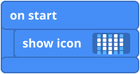

What you will make
You will write a tiny program, test it on the pretend micro:bit on screen, and then send it to your real one. When it works, your micro:bit shows a heart.
You need
- A computer with a web browser
- Your micro:bit and its USB cable
Steps
- Go to makecode.microbit.org and click New Project. Give it a name, like "My heart", and click Create.
- Look at the screen. On the left is a pretend micro:bit. In the middle is the list of block types. On the right is the workspace, where you build your program.
- Click Basic in the list. Find the show icon block and drag it into the on start block. It clicks into place, like this:

- Look at the pretend micro:bit. A heart appears! You have written a program.
- Now send it to your real micro:bit. Plug the micro:bit into the computer with the USB cable and click Download. If the program does not go onto the micro:bit by itself, copy the file that was downloaded onto the drive called MICROBIT. Your micro:bit shows the heart.
Challenge
- Click the heart in your block and pick a different icon. Try three!
- Bonus: use the show leds block (also in Basic) and click the little squares to draw your own picture. Which light is (2, 2)? See the LED grid if you forget.
The code in words
Click the JavaScript tab in MakeCode to see your program written as text. You can also choose Python from the menu next to it.
JavaScript: basic.showIcon(IconNames.Heart) Python: basic.show_icon(IconNames.HEART)
Teacher notes
- Time: about 20 minutes, plus the challenge.
- Ideas covered: an event (on start), running a program on a real device, and the 5 x 5 LED display.
- If nothing appears on the micro:bit: some USB cables only charge and cannot carry data, so try another cable. A block that is not snapped inside on start will not run.
- Downloading: in some browsers MakeCode can send the program straight to the micro:bit. In others it saves a file to copy onto the MICROBIT drive.
- The block picture is a simplified drawing. The real blocks in MakeCode look slightly different.